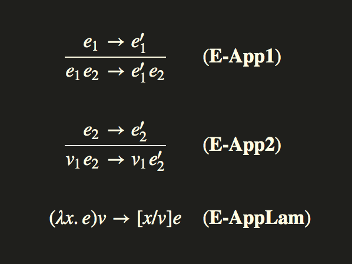
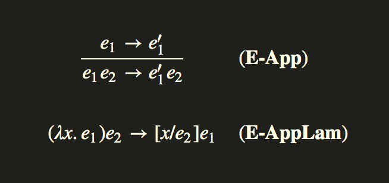

類型正確的程序不可以”出錯”. — Robin Milner
http://dev.stephendiehl.com/fun/005_evaluation.html
Evaluation(評估)
尽管lambda演算极其简单，但评估和实现lambda表达式的约简的方式却多种多样。
评估的不同模型是评估策略。
设计空间中存在兩點分歧:严格和非严格评估。
如果在约简lambda之前必须先评估lambda表达式的参数，则稱评估策略是严格的。
在lambda约简之前不必对参数进行求值的语言是非严格的。
换句话说，diverging terms(分歧项)由bottom值(表示为⊥f)表示相等。1
f ⊥ ≠ ⊥
評估模型
有许多不同的模型及其各种混合形式。我们将考虑三种主要模型：
Call-by-value(按值调用): 在進入函数之前先评估参数Call-by-name(按名称调用): 参数传递时未评估Call-by-need(按需调用): 参数传递时未评估，但表达式只評估一次，并在后续引用时共享
給定一個表達式: fx1
2
3
4
5
6
7
8
9
10
11
12
13Call-by-value:
1. 評估 xv
2. 評估 fλy.e
3. 評估 [y/v]e
Call-by-name:
1. 評估 fλy.e
2. 評估 [y/x]e
Call-by-need:
1. 分配一個thunk vx
2. 評估 fλy.e
3. 評估 [y/v]e
在一个模型中具有正常形式的terms(項)在另一个模型中可能具有或不具有正常形式。
在call-by-need和call-by-name的评估中，不一定要在進入之前就评估不同的terms(項)，因此在这些模型中具有正常形式的某些term(項)可能会在call-by-value的情况下发生偏离。
Call-by-value
Call-by-value是一种非常普遍的评估模型。许多命令式和函数式编程语言都使用此评估策略。
Call-by-value的本质是有两类表达式: terms(术语/項)和values(值)。
values是lambda表达式和其他形式的普通项，不能进一步简化。函数的所有参数在被绑定到lambda内部之前都将被简化为正常形式，并且只有在参数被简化之后才会进行归纳。
对于简单的算术表达式，归纳如下进行。请注意，子表达式(2 + 2)在绑定之前是如何评估为正常形式的。1
2
3
4
5
6(\x. \y. y x) (2 + 2) (\x. x + 1)
=> (\x. \y. y x) 4 (\x. x + 1)
=> (\y. y 4) (\x. x + 1)
=> (\x. x + 1) 4
=> 4 + 1
=> 5
当然，对于应用程序有两个评估规则。

对于简单的小的λ演算，按值调用解释器非常简单。lambda演算的运行时评估的一部分涉及创建闭包，即将局部变量保存在作用域内的环境。
用我们的小语言来说，reduction(規約)可能会收敛的两个可能的值是VInt和VClosure。1
2
3
4
5
6
7
8
9
10
11
12
13
14
15
16
17
18
19
20data Expr
= Var Int
| Lam Expr
| App Expr Expr
| Lit Int
| Prim PrimOp Expr Expr
deriving Show
data PrimOp = Add | Mul
deriving Show
data Value
= VInt Int
| VClosure Expr Env
deriving Show
type Env = [Value]
emptyEnv :: Env
emptyEnv = []
评估函数仅将本地作用域和一個term(术语)映射到最终值。每当引用变量时，都会在环境中查找该变量。
每当输入lambda时，它将使用闭包的本地作用域扩展环境。1
2
3
4
5
6
7
8
9
10
11
12
13
14
15eval :: Env -> Expr -> Value
eval env term = case term of
Var n -> env !! n
Lam a -> VClosure a env
App a b ->
let VClosure c env' = eval env a in
let v = eval env b in
eval (v : env') c
Lit n -> VInt n
Prim p a b -> (evalPrim p) (eval env a) (eval env b)
evalPrim :: PrimOp -> Value -> Value -> Value
evalPrim Add (VInt a) (VInt b) = VInt (a + b)
evalPrim Mul (VInt a) (VInt b) = VInt (a * b)
Call-by-name
在Call-by-name评估中，將按原样替换lambda表达式的参数，评估仅从左向右进行替换最外面的lambda或归约值。如果不使用替换表达式，则永远不会求值。

例如，我们看过的Call-by-value的相同表达式具有相同的正常形式，但通过不同的归约顺序得出：1
2
3
4
5
6(\x. \y. y x) (2 + 2) (\x. x + 1)
=> (\y. y (2 + 2)) (\x. x + 1)
=> (\x. x + 1) (2 + 2)
=> (2 + 2) + 1
=> 4 + 1
=> 5
尽管很少有语言使用此模型，但Call-by-name不是严格的。
Call-by-need
Call-by-need是一种特殊类型的非严格评估，其中未评估的表达式由suspensions或thunks表示，将其传递到未评估的函数中，仅在需要或强制时才对其进行评估。
当强制使用thunk时，thunk的表示将使用计算值进行更新，并且在进一步引用时不会重新计算。
未评估的lambda表达式的thunk会在评估时分配，并将所得的计算值放在相同的引用中，以便后续计算共享结果。如果不再需要该参数，则永远不会对其进行计算，这将导致在空间和时间之间进行权衡。
由于子表达式的评估不遵循任何预先定义的顺序，因此带有副作用的任何不纯函数的评估都将以不确定的顺序进行。因此，仅在纯函數设置中才能有效实现Call-by-need。
1 | type Thunk = () -> IO Value |
例如，在这个模型中，下面的程序不会diverge(发散)，因为传递给常量函数的omega组合子没有被使用，因此参数没有被求值。1
2
3
4
5
6
7
8
9omega = (\x -> x x) (\x -> x x)
test1 = (\y -> 42) omega
omega :: Expr
omega = EApp (ELam "x" (EApp (EVar "x") (EVar "x")))
(ELam "x" (EApp (EVar "x") (EVar "x")))
test1 :: IO Value
test1 = eval [] $ EApp (ELam "y" (EInt 42)) omega
Higher Order Abstract Syntax (HOAS)
GHC Haskell是一种丰富的语言，具有多种扩展功能，除其他外，这些功能使我们能够将定义语言中的lambda表达式直接映射到Haskell中的lambda表达式。
在这种情况下，我们将使用GADT在我们的表达式类型中嵌入Haskell表达式。
1 |
|
这种编码最显著的特点是，变量没有獨特的构造函数。相反，它们只是宿主语言中的值。一些示例表达式:1
2
3
4
5
6
7
8id :: Expr (a -> a)
id = Lam (\x -> x)
tr :: Expr (a -> b -> a)
tr = Lam (\x -> (Lam (\y -> x)))
fl :: Expr (a -> b -> b)
fl = Lam (\x -> (Lam (\y -> y)))
然后，我们的evaluator只需使用Haskell进行评估。1
2
3
4
5
6eval :: Expr a -> a
eval (Lift v) = v
eval (Tup e1 e2) = (eval e1, eval e2)
eval (Lam f) = \x -> eval (f (Lift x))
eval (App e1 e2) = (eval e1) (eval e2)
eval (Fix f) = (eval f) (eval (Fix f))
一些使用的例子:1
2
3
4
5
6
7
8
9
10
11
12
13
14
15fact :: Expr (Integer -> Integer)
fact =
Fix (
Lam (\f ->
Lam (\y ->
Lift (
if eval y == 0
then 1
else eval y * (eval f) (eval y - 1)))))
test :: Integer
test = eval fact 10
main :: IO ()
main = print test
在使用HOAS时必须注意几点。首先，转换这种形式的表达式需要做更多的工作，因为为了处理表达式，我们需要到达Haskell函数本身的lambda绑定下。因为所有的机制都被封装在Haskell的实现中，即使是像漂亮的打印和编写转换传递这样的简单操作也会变得更加困难。这种形式是评估的好形式，但不是转换的好形式。
Parametric Higher Order Abstract Syntax (PHOAS)
另一种稍微不同的HOAS形式称为PHOAS，它在存在类型下的绑定类型上使用参数化的lambda表示。1
2
3
4
5
6
7
8
9
data ExprP a
= VarP a
| AppP (ExprP a) (ExprP a)
| LamP (a -> ExprP a)
| LitP Integer
newtype Expr = Expr { unExpr :: forall a . ExprP a }
我们语言中的lambda只是Haskell中的lambda。例如，通常的SK组合器将编写如下:1
2
3
4
5
6
7
8
9
10
11
12
13
14
15
16
17
18-- i x = x
i :: ExprP a
i = LamP (\a -> VarP a)
-- k x y = x
k :: ExprP a
k = LamP (\x -> LamP (\y -> VarP x))
-- s f g x = f x (g x)
s :: ExprP a
s =
LamP (\f ->
LamP (\g ->
LamP (\x ->
AppP
(AppP (VarP f) (VarP x))
(AppP (VarP g) (VarP x))
)))
评估将产生运行时Value类型，就像我们的外部解释器一样。
我们将使用几个extractor函数，这些函数在後台使用不完整的模式。
该模型本身并不能防止格式错误的程序在这里爆炸，因此有必要在评估之前确保程序是正确的。 通常，在达到这一点之前，typechecker(类型检查器)会在更高级别上保证这一点。1
2
3
4
5
6
7
8
9
10
11
12
13data Value
= VLit Integer
| VFun (Value -> Value)
fromVFun :: Value -> (Value -> Value)
fromVFun val = case val of
VFun f -> f
_ -> error "not a function"
fromVLit :: Value -> Integer
fromVLit val = case val of
VLit n -> n
_ -> error "not an integer"
评估只是利用了一个事实，即利用了我們存在类型下的Haskell函数，因此我们免费获得所有名称捕获，闭包和绑定机制。PHOAS模型的评估逻辑非常短。1
2
3
4
5
6eval :: Expr -> Value
eval e = ev (unExpr e) where
ev (LamP f) = VFun(ev . f)
ev (VarP v) = v
ev (AppP e1 e2) = fromVFun (ev e1) (ev e2)
ev (LitP n) = VLit n
再次考虑S K K = I示例，并检查结果:1
2
3
4
5skk :: ExprP a
skk = AppP (AppP s k) k
example :: Integer
example = fromVLit $ eval $ Expr (AppP skk (LitP 3))
我们将广泛地使用这种评估技术来为我们更大的语言编写翻译。这是在Haskell中编写解释器非常方便和有用的方法。
Embedding IO
如前所述，effects是Haskell中的一流值。
在Haskell中，我们不直接读取文件，而是创建一个表示读取文件的值。通过在我们的语言的基本操作与Haskell中标准操作的现有函数实现之间建立映射，并使用monadic操作建立纯有效的计算结果，我们可以在Haskell中为我们的语言的解释程序建立非常清晰的模型的解释。经过评估，我们最终将得到的IO值提升到Haskell中并执行结果。这与PHOAS模型非常吻合，并且使我们能够简单地利用Haskell的实现，以非常少的代码有效地为我们的语言实现完整的解释器。
要将IO操作嵌入我们的解释器中，我们创建了一个独特的VEffect值，该值将在评估过程中建立顺序IO计算。该值将传递给Haskell，并具体化为现实世界的effects。1
2
3
4
5
6
7
8
9
10
11
12
13
14
15
16
17
18
19
20
21
22
23
24
25
26
27
28
29
30data ExprP a
= VarP a
| GlobalP Name
| AppP (ExprP a) (ExprP a)
| LamP (a -> ExprP a)
| LitP Char
| EffectP a
data Value
= VChar Char
| VFun (Value -> Value)
| VEffect (IO Value)
| VUnit
fromVEff :: Value -> (IO Value)
fromVEff val = case val of
VEffect f -> f
_ -> error "not an effect"
eval :: Expr -> Value
eval e = ev (unExpr e) where
ev (LamP f) = VFun(ev . f)
ev (AppP e1 e2) = fromVFun (ev e1) (ev e2)
ev (LitP n) = VChar n
ev (EffectP v) = v
ev (VarP v) = v
ev (GlobalP op) = prim op
-- Lift an effect from our language into Haskell IO.
run :: Expr -> IO ()
run f = void (fromVEff (eval f))
prim函数将仅对一组内置操作执行查找，我们将使用一些语法糖来定义这些操作，以包装Haskell函数。1
2
3
4
5
6
7
8
9
10
11
12
13
14
15
16
17
18
19
20
21unary :: (Value -> Value) -> Value
unary f = lam $ \a -> f a
binary :: (Value -> Value -> Value) -> Value
binary f = lam $ \a ->
lam $ \b -> f a b
prim :: Name -> Value
prim op = case op of
"putChar#" -> unary $ \x ->
VEffect $ do
putChar (fromVChar x)
return VUnit
"getChar#" -> VEffect $ do
val <- getChar
return (VChar val)
"bindIO#" -> binary $ \x y -> bindIO x y
"returnIO#" -> unary $ \x -> returnIO x
"thenIO#" -> binary $ \x y -> thenIO x y
例如，我们语言中的thenIO＃序列effects(效果)将简单地将两个VEffect对象压缩为一个复合effects，从而建立一个新的VEffect值，该值在內部IO值上使用Haskell的monadic序列.1
2
3
4
5
6
7
8bindIO :: Value -> Value -> Value
bindIO (VEffect f) (VFun g) = VEffect (f >>= fromVEff . g)
thenIO :: Value -> Value -> Value
thenIO (VEffect f) (VEffect g) = VEffect (f >> g)
returnIO :: Value -> Value
returnIO a = VEffect $ return a
实际上，我们只是重新创建了与Haskell IO及其运行时相同的概念关系，但是，我们的宿主语言使用Haskell作为运行时.